Dnevni izazov —29.10.2026.
Android emulator: svih deset tema, stvarno obaveštenje već odigrano na 360×780; osam sačuvanih intro kadrova. Nalogu je današnji izazov već odigran, zato nov aktivni/završni tok i isplata nisu izvršeni.
Korisnik je potvrdio commit/deploy prethodnih izmena. Javni theme-tournament-final.css?v=3 odgovara lokalnom fajlu. Snimci Androida su PRE novih R22/R23 dorada, koje nisu commitovane/deployovane.
Lokalne dorade
Daily obaveštenja dobijaju svoj modal-context-daily: jednake Green mere/fontovi naslova, teksta i dugmeta, bez stare Easter razlike od2px. Paletne površine/mastilo i jasno dugme U REDU, bez starog crnog teksta na tamnobraon/plavoj podlozi ili nasleđenih senki devet tema. Dva Green akcijska gradijenta koriste postojeće tamnije tonove radi kontrasta najmanje5,46:1 za tekst. Funkcije i PNG crteži nisu menjani.
Priprema X učitavala close-v1.png?v=1, a prikazani CSS ?v=3 odnosno?v=4. Resolver sada vraća isti URL i verziju kao CSS svih deset tema, da se pripremljena slika zaista koristi. Regresioni test poredi svih deset punih URL-ova. Android potvrda čeka deploy.
PASS150:10tema×5stanja×320×568/360×780/412×915. Stvarni DnevniIzazov, ModalManager i YambFeatures; sintetički posedovani tematski skin, šest učitanih PNG kockica, jednake Green mere/fontovi, bez odsecanja/skrola, vidljivi PNG. Izolovani test nema nalog, server ni spoljašnju mrežu; nema oglasa/isplate. Animacije isključene, Montserrat može koristiti offline fallback. Ne meri fizički S25 ili fps.
- Aktivan i završni Daily panel nisu novi Android dokaz; imaju lokalni sintetički renderer dokaz u svih deset tema. Stvarna reklama/isplata i oporavak nakon greške nisu sada testirani na nalogu.
- Precizno trajanje intra nije mereno screenshotima; zajednička konfiguracija ostaje2400/3200ms.
- Nove R22/R23 izmene zahtevaju korisnikov deploy i Android potvrdu. Ranijih deset soba nije ponovo kompletno pregledano posle ovog deploya.
- Preostaju četiri igračka moda i ove otvorene Daily transakcione/Android provere. Ne označavati svih15soba ili sve tokove kao završene.
Zelena
Stvarni Android — objavljena verzija
Lokalni renderer — nove dorade, test podaci
Svetlo zlato
Stvarni Android — objavljena verzija
Svetlo zlato — stvarni ponovni ulazak / već odigrano
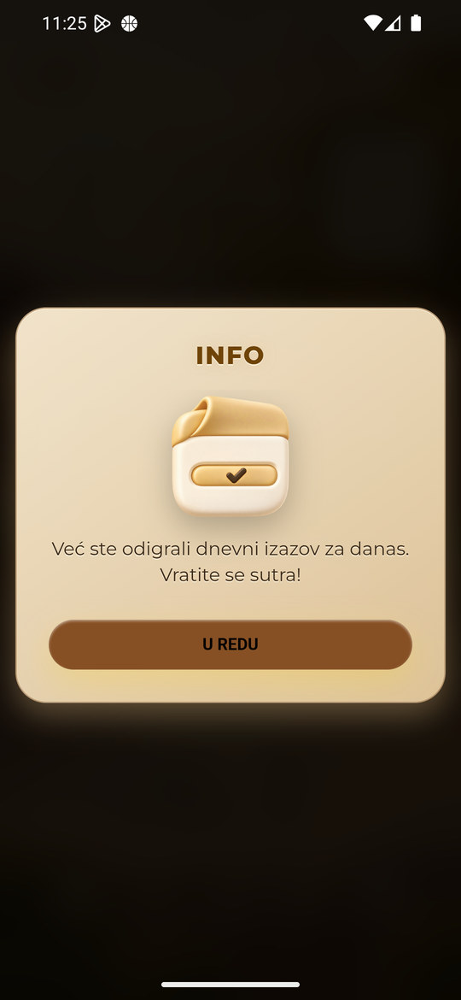
Lokalni renderer — nove dorade, test podaci
Trula višnja
Stvarni Android — objavljena verzija
Trula višnja — stvarni ponovni ulazak / već odigrano
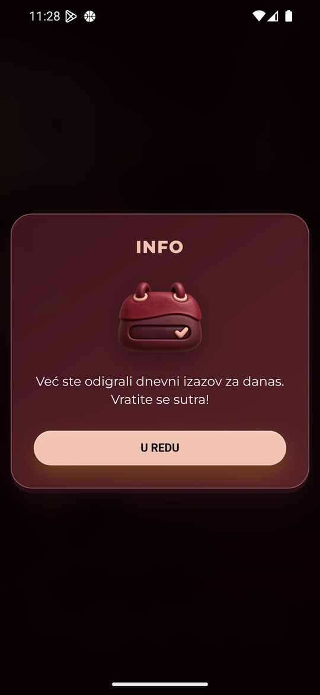
Trula višnja — kadar intra (ne merenje trajanja)
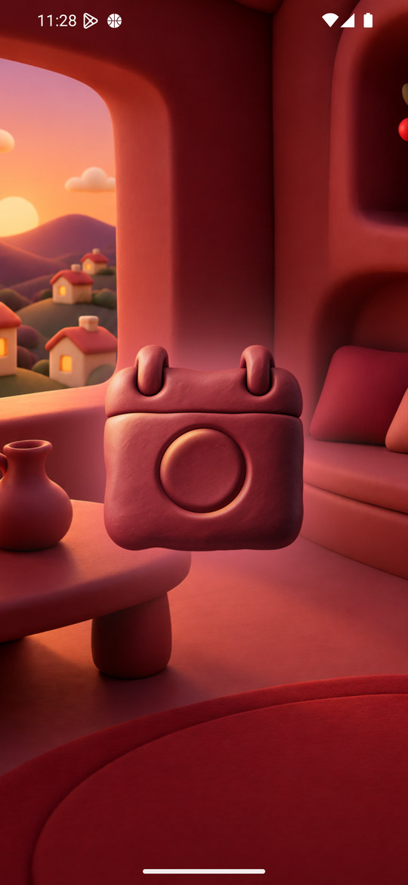
Lokalni renderer — nove dorade, test podaci
Plavi okean
Stvarni Android — objavljena verzija
Lokalni renderer — nove dorade, test podaci
Neon Cyber
Stvarni Android — objavljena verzija
Lokalni renderer — nove dorade, test podaci
Kraljevski ametist
Stvarni Android — objavljena verzija
Kraljevski ametist — stvarni ponovni ulazak / već odigrano
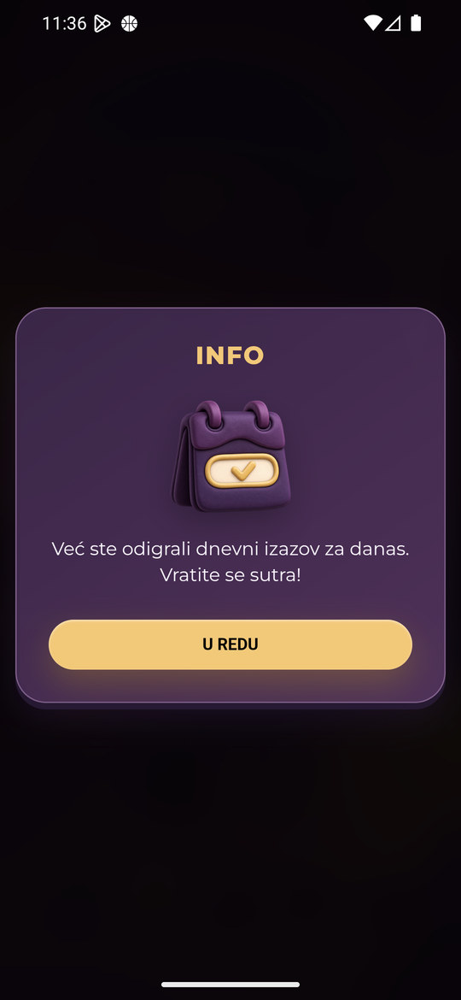
Kraljevski ametist — kadar intra (ne merenje trajanja)
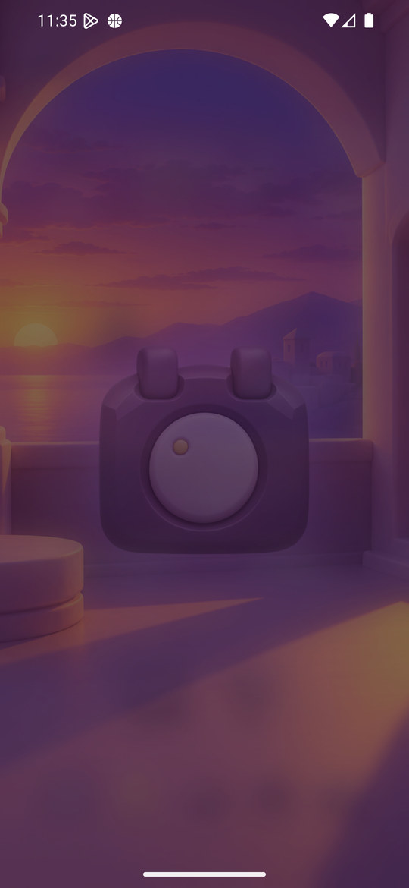
Lokalni renderer — nove dorade, test podaci
Vaskršnja
Stvarni Android — objavljena verzija
Lokalni renderer — nove dorade, test podaci
Pustinjsko staklo
Stvarni Android — objavljena verzija
Pustinjsko staklo — stvarni ponovni ulazak / već odigrano
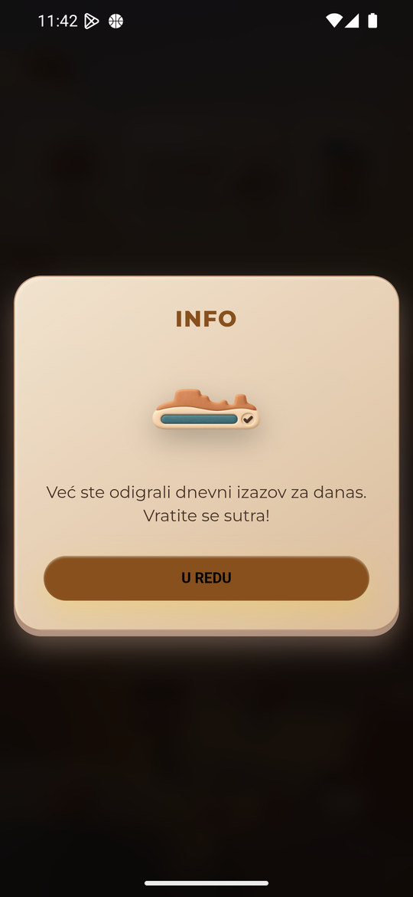
Pustinjsko staklo — kadar intra (ne merenje trajanja)
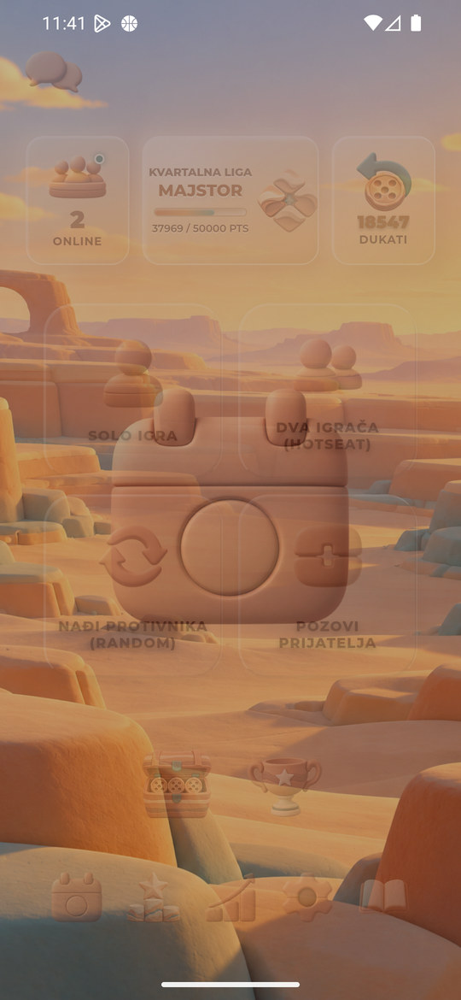
Lokalni renderer — nove dorade, test podaci
Mesečev sjaj
Stvarni Android — objavljena verzija
Lokalni renderer — nove dorade, test podaci
Severna maglina
Stvarni Android — objavljena verzija
Severna maglina — stvarni ponovni ulazak / već odigrano
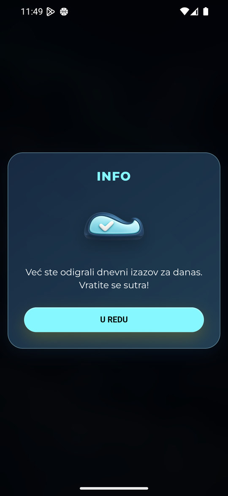
Severna maglina — kadar intra (ne merenje trajanja)
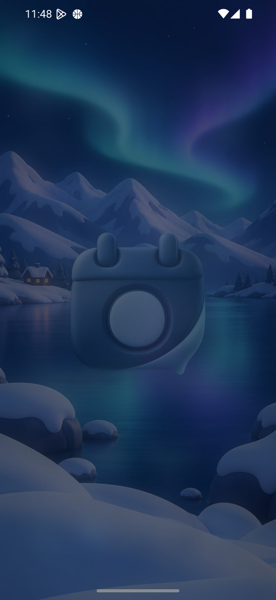
Lokalni renderer — nove dorade, test podaci
Dodatni dokazi
Pustinjsko staklo — X još nije učitan
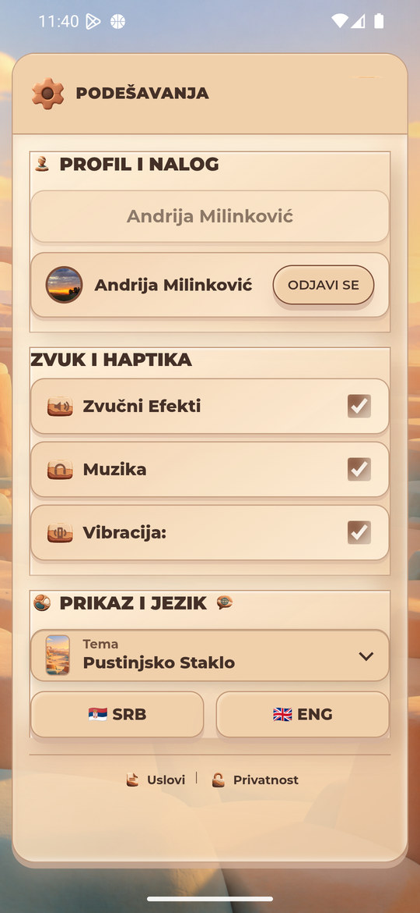
Isti prikaz nakon učitavanja X
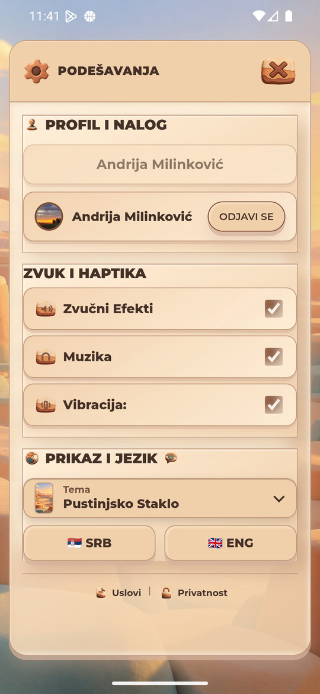
Vraćena Zelena i originalne mere emulatora
Korisnik je odobrio zaustavljanje šest kockica bez reklame/nagrade; nalog je već odigrao izazov i taj test nije korišćen. Nisu zaustavljane nove kockice, preuzimane nagrade, gledane nagradne reklame, menjani skinovi, kupovano ili slati pozivi/poruke. Otvarana su i zatvarana samo informativna stanja.
Zelena i originalnih1440×3120/560dpi vraćeni, prijava očuvana. Nema novog commita/deploya.